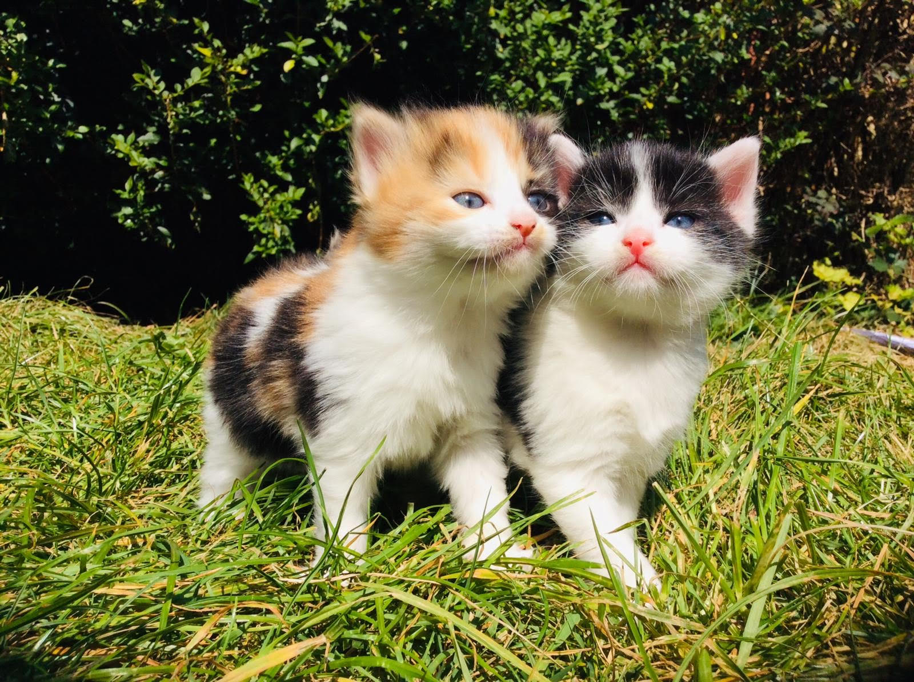
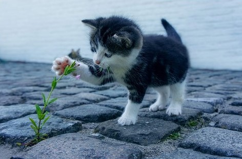
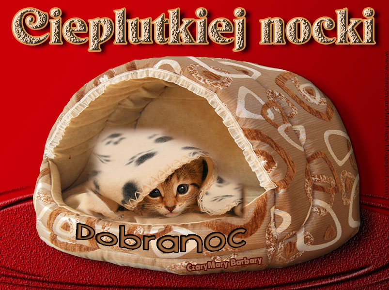

Ta strona jest jeszcze w wersji beta. Jeśli chcesz zobaczyć pełną wersję strony, to musisz poczekać kilka miesięcy.
KotoBlog będzie blogiem, który będzie miał:
obrazki
filmiki
informacje
linki
porady
koty
i inne rzeczy!
Zdjęcia Kotków


Zdjęcia kotków z CzaryMary Barbary

Kocie GIFy
Kocie Filmiki
Linki o kotach
Kot na Wikipedii
Koty.pl
Koty na zooplus (z tantąd też możesz kupić rzeczy dla kotów)
Kot na Wikipedii
Inne rzeczy
KotoBlog v0.23 został zaprojektowany i zrobiony przez Oliwiera Troć (2020 - 2020).